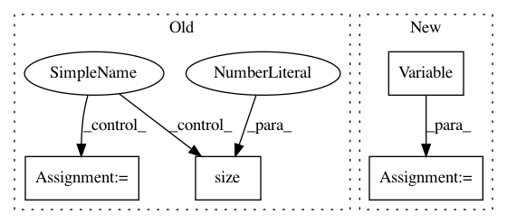

614c41e7f05d274991d95271c49a87af3fa2cf49,onmt/Loss.py,NMTLossCompute,compute_loss,#NMTLossCompute#Any#Any#Any#,150
Before Change
norm_ = 0
if self.label_smoothing > 0:
mask = target_feed.unsqueeze(1).eq(self.padding_idx) \
.repeat(1, scores.size(1))
target_ = Variable(self.one_hot.repeat(target_feed.size(0), 1),
requires_grad=False)
target_.scatter_(1, target_feed.unsqueeze(1),
1 - self.label_smoothing)
target_.masked_fill_(mask, 0)
target_feed = target_
norm_ = self.normalizing * target.data.ne(self.padding_idx).sum()
loss = self.criterion(scores, target_feed)
loss_data = loss.data.clone() + norm_
After Change
if mask.dim() > 0:
likelihood.index_fill_(0, mask, 0)
tmp_.index_fill_(0, mask, 0)
gtruth = Variable(tmp_, requires_grad=False)
loss = self.criterion(scores, gtruth)
if self.confidence < 1:
loss_data = - likelihood.sum(0)
In pattern: SUPERPATTERN
Frequency: 3
Non-data size: 4
Instances
Project Name: OpenNMT/OpenNMT-py
Commit Name: 614c41e7f05d274991d95271c49a87af3fa2cf49
Time: 2017-12-22
Author: skywalker@postech.edu
File Name: onmt/Loss.py
Class Name: NMTLossCompute
Method Name: compute_loss
Project Name: OpenNMT/OpenNMT-py
Commit Name: b87368e1e7fd832b505db9cc08015ac7af8f95de
Time: 2016-12-23
Author: jvanamersfoort@twitter.com
File Name: VAE/main.py
Class Name:
Method Name: train
Project Name: OpenNMT/OpenNMT-py
Commit Name: b87368e1e7fd832b505db9cc08015ac7af8f95de
Time: 2016-12-23
Author: jvanamersfoort@twitter.com
File Name: VAE/main.py
Class Name:
Method Name: test